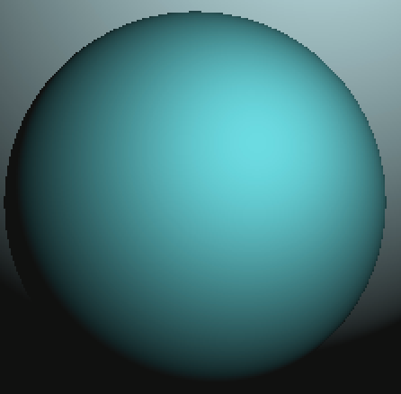
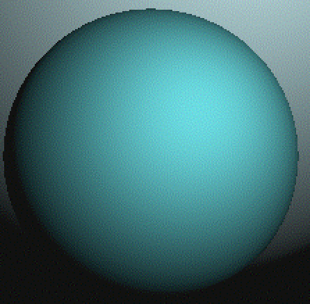
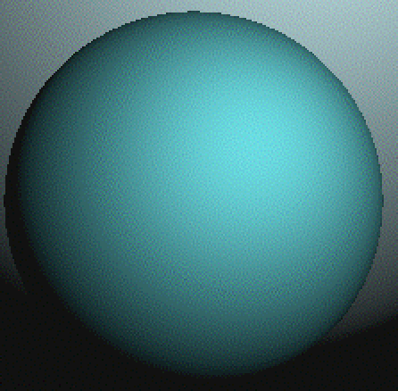
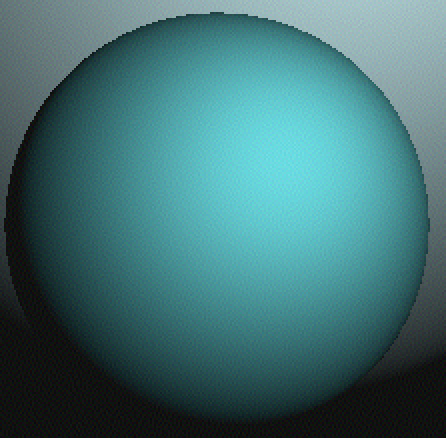
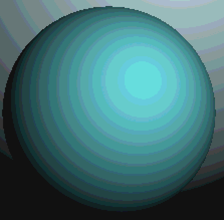

How many unique colors are needed for acceptably rendering color?
Dithering can exploit human vision reduced ability to precisely distinguish colors accurately at higher spatial frequencies. Full color may be rendered on devices with limited (for example, 3, 4 or 256 color) palettes by dithering, where error diffusions are among better dithering techniques. Rendering e.g. 32-bit CMYK images using single dots of primary printed colorants may be compromised by not fully accounting for printed density inconsistencies among isolated and adjacent dots. Consequently, diffused errors may not be representative. Further, error diffusion to binary is compromised by an assumption that dispersed binary dots are indistinguishable from their average gray value. Error diffusion to a larger selection of color values can exploit human vision better blending more similar colors at high spatial frequencies. While "worm" artifacts can be problematic for binary error diffusions, artifacts can be less evident when error diffusing with finer intensity granularities.
Current digital color printing pipelines typically involve 3-dimensional interpolation for color conversion followed by binary error diffusion or multibit halftoning, which may achieve more consistent densities than does binary error diffusion.This proposal eliminates separate color conversion and combines halftoning and error diffusion. 24-bit RGB (or YCbCr) color inputs are summed with diffused error and truncated to 12-bits values, which index a table of halftone dot profiles that were generated for each of 4096 unique colors, along with corresponding rendered densities characterized in input color space values at full input precision from which diffused errors are calculated.


These examples were generated using a cropped
ITU T.24 image, balls_400.
Images are pixel-doubled to make error diffusion
artifacts more visible.
To the left is the 24-bit original, cropped and pixel-doubled.
Some texture may already be evident.
For reference, this "original" uses 509 unique colors.
To the right is an error-diffused rendering.
This error-diffused image has more texture, arranged in bands or contours.
Some texture results from error diffusion dithering among nearest available colors.
Contours are based on differences between input colors and available colors.
For input colors where little error is diffused, less dithering occurs.
More slowly changing input color values produce more visible texture contour artifacts.
This image has 158 unique colors.

The ball to the left used the same error diffusion, except
some pseudo-random noise was first added to each input color.
Hopefully, while it may appear to have a little more texture
overall, contours in those textures are less apparent than in the ball above.
This texture will alias with halftone dot profiles, so to avoid
contour artifacts in that aliasing, we should minimize texture
contours. Adding noise resulted in 443 unique colors being output.
The right ball adds more random noise to input colors
with less error dithered. As of April 10, this works about as
well as intended, so texture is more visibly uniform without
particularly increasing peak noise amplitudes. It has 287
unique colors.

Balls above all use 4 bits per color component for indexing and 4 bits for dithering.
The left ball here uses 5 bits per component for indexing, resulting in 602 unique colors.
This right ball uses 3 bits for 97 unique colors.
To make dither artifacts more visible,
each original ITU T.24 image pixel corresponds to 2x2 pixels here.
In some web browsers, dithering artifacts were otherwise not apparant.

To demonstrate that NOT dithering reduced-precision images
would be generally unacceptable,
here is the same ball with color components truncated
to 4-bits, as in the second, third, and fourth images, but without
dithering.
Spatial dithers assume that spatially distributed stimuli can be equivalent. This is more nearly correct when stimuli are quantized more linearly in stimulus energy than perception. However, RGB images and displays typically involve gamma, approximating perceived color differences. Better results should be obtained by converting to e.g. linear RGB for error diffusion, while still indexing in input (gamma or other perceptual difference) color space. Error diffusion using linear stimulus values may reduce dither texture prominance in darker colors. For error diffusion to 12 bits, this might involve a 4096-entry table of 32-bit linear stimulus values to diffuse in addition to a 4096-entry table of (16-bit) halftone dot profiles.
Calibrating a rendering device amounts to generating that table of 32-bit linear stimulus values for those halftone dot profiles.